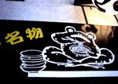
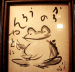
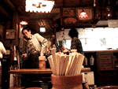

カエルなうどん屋！
博多山笠の街にケロケロうどん
|

|
|

|
|

|
|
かろのうろん、の御神体はカエルだった。上が看板。真ん中が店内の色紙。下は風格ある店内だ。博多祇園山笠発祥の土地にある、うどんやなのだ。
|
【福岡発=げこげこ大王７世】７月１５日は、博多っ子が燃える祇園山笠の季節だ。大王様は貧弱な肉体美なので、人前に裸身をさらすこの祭りには出場しないのだが、それはそれで好きなのである。この博多の中心部に『かろのうどん』といううどん店があるのだが、ごらんの通りのカエルざんまいな店なのだ。
看板もカエルなら、店内の絵もカエル。そうして、神棚にあった御神体までカエルだったのである。
かえる好きなら、福岡に来て『かろのうどん』を食べるしかないぞ。さあ、今年の夏は海外旅行を即座にやめて、福岡行きの航空券を予約しよう！！
カエルコレクション展へ出展物を大募集
【東京発=堀田理佳さま】『KRKR-MTG』のページでもご案内してますが、カエルコレクション展へ出展してもらえるものを今、大募集中です。みなさん、どんどん出展してください。
遠方から送られる場合、念のため壊れそうなものは避けた方がよいと思いますが、一つでも多くのものを展示したいと思っています。よろしくお願いいたします。
どんな展示会になるのか。詳細は『KRKR-MTG』のページへ行ってみよう。
カエル好きならカーソルもカエルだ
【東京発=堀田理佳さま】ナイスなものがあります。これ知ってました？
【福岡発=げこげこ大王７世】大王様はすでに知っているぞ(笑)これって、けろすけ様の力作ではござらぬか。。。ふふふふ、すでに大王様は使っているのだ。
カエル好きなマックユーザーなら、けろすけ先生のカエルスタートアップ画面、カエルホルダ、カエルカーソルは、『パソコンカエルツール３種の神器』ということは常識なのである。さあーみんなも、「けろすけ」のページに行ってみよう。
とりあえず、カーソルはここにあるぞ。
かえるキャラバン隊情報到着
【東京発=けろけろよしだ同志記者】原宿駅から明治神宮に向かうJRをまたぐ橋の上で「ござ」いっぱいのカエルグッズをぶちまけて販売していた謎の集団を写真撮影しました。
大王様は確かに受領したぞ！詳細は次号を見よ！！
かえるモノページを新装開店
【全国かえる奉賛会】大王様所蔵のカエル品を公開するカエルモノページを新装開店したぞ。画像を節約したため、これまで見本画像と拡大画像を分化していたものをページにいきなり全部貼り付けてしまった。これは、アダルトサイトなみの重たいページになってしまったが、そのかわりに待てばすべて見ることができるぞ。改悪かなー(笑)
|